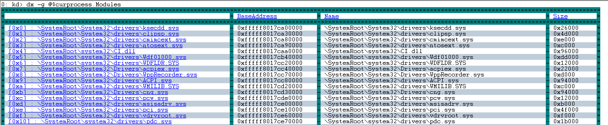

The dx command displays a C++ expression using the NatVis extension model. For more information about NatVis, see Create custom views of native objects in the debugger.
dx [-g|-gc #][-c #][-n|-v]-r[#] Expression[,<FormatSpecifier> ]
dx [{-?}|{-h}]
Parameters
- Expression
-
A C++ expression to be displayed.
- -g
-
Display as a data grid objects which are iterable. Each iterated element is a row in the grid and each display child of those elements is a column. This allows you to view something such as an array of structs, where each array element is displayed in a row and each field of the struct is displayed in a column.
Left clicking a column name (where there is an available DML link) will sort by that column. If already sorted by that column, the sort order will be inverted.
Any object which is iterable will have a right click context menu item added via DML called 'Display as Grid'. Right clicking an object in the output window and selecting this will display the object in the grid view instead of the standard tree view.
A (+) displayed by a column name offers both a right click and left click behavior.
- Left click takes that column and explodes it into its own table. You see the original rows plus the children of the expanded column.
- Right click provides "Expand Into Grid" which takes the column and adds it back to the current table as right most columns.
- -gc #
-
Display as a grid and restrict grid cell sizes to specified number of (#) characters.
- -c #
-
Displays container continuation (skipping # elements of the container).This option is typically used in custom output automation scenarios and provides a "…" continuation element at the bottom of the listing.
- -n
-
There are two ways that data can be rendered. Using the NatVis visualization (the default) or using the underlying native C/C++ structures. Specify the -n parameter to render the output using just the native C/C++ structures and not the NatVis visualizations.
- -v
-
Display verbose information that includes methods and other non-typical objects.
- -r#
-
Recursively display subtypes (fields) up to # levels. If # is not specified, a recursion level of one, is the default value.
- [<,FormatSpecifier>]
-
Use any of the following format specifiers to modify the default rendering.
,x Display ordinals in hexidecimal ,d Display ordinals in decimal ,o Display ordinals in octal ,b Display ordinals in binary ,en Display enums by name only (no value) ,c Display as single character (not a string) .s Display 8-bit strings as ASCII quoted ,sb Display 8-bit strings as ASCII unquoted ,s8 Display 8-bit strings as UTF-8 quoted ,s8b Display 8-bit strings as UTF-8 unquoted ,su Display 16-bit strings as UTF-16 quoted ,sub Display 16-bit strings as UTF-16 unqouted ,! Display objects in raw mode only (e.g.: no NatVis) ,# Specify length of pointer/array/container as the literal value # (replace with numeric) ,[<expression>] Specify length of pointer/array/container as the expression <expression> ,nd Do not find the derived (runtype) type of the object. Display static value only - dx {-?}
-
Display command line help.
- dx {-h}
-
Displays help for objects available in the debugger.
Command line usage example
The .dx settings command can be used to display information about the Debug Settings object. For more information about the debug settings objects, see .settings .
kd> dx -r1 Debugger.Settings
Debugger.Settings :
Display :
EngineInitialization :
Extensions :
Input :
Sources :
Symbols :
AutoSaveSettings : false
Use the -r1 recursion option to view the other Debugger objects - Sessions, Settings and State.
kd> dx -r1 Debugger
Debugger :
Sessions :
Settings :
State :
Specify the Debugger.Sessions object with the -r3 recursion option to travel further down the object chain.
kd> dx -r3 Debugger.Sessions
Debugger.Sessions :
[0] : Remote KD: KdSrv:Server=@{<Local>},Trans=@{1394:Channel=0}
Processes :
[0] : <Unknown Image>
[4] : <Unknown Image>
[304] : smss.exe
[388] : csrss.exe
[456] : wininit.exe
[468] : csrss.exe
[528] : services.exe
[536] : lsass.exe
[544] : winlogon.exe
[620] : svchost.exe
... ...
Add the x format specifier to display the ordinal values in hexadecimal.
kd> dx -r3 Debugger.Sessions,x
Debugger.Sessions,x :
[0x0] : Remote KD: KdSrv:Server=@{<Local>},Trans=@{1394:Channel=0}
Processes :
[0x0] : <Unknown Image>
[0x4] : <Unknown Image>
[0x130] : smss.exe
[0x184] : csrss.exe
[0x1c8] : wininit.exe
[0x1d4] : csrss.exe
[0x210] : services.exe
[0x218] : lsass.exe
[0x220] : winlogon.exe
[0x26c] : svchost.exe
[0x298] : svchost.exe
[0x308] : dwm.exe
[0x34c] : nvvsvc.exe
[0x37c] : nvvsvc.exe
[0x384] : svchost.exe
... ...
This example uses an active debug session to list the call stack of the first thread in the first process.
kd> dx -r1 Debugger.Sessions.First().Processes.First().Threads.First().Stack.Frames
Debugger.Sessions.First().Processes.First().Threads.First().Stack.Frames :
[0x0] : nt!RtlpBreakWithStatusInstruction
[0x1] : nt!KdCheckForDebugBreak + 0x7a006
[0x2] : nt!KiUpdateRunTime + 0x42
[0x3] : nt!KiUpdateTime + 0x129
[0x4] : nt!KeClockInterruptNotify + 0x1c3
[0x5] : hal!HalpTimerClockInterruptEpilogCommon + 0xa
[0x6] : hal!HalpTimerClockInterruptCommon + 0x3e
[0x7] : hal!HalpTimerClockInterrupt + 0x1cb
[0x8] : nt!KiIdleLoop + 0x1a
Use the -g option to display output as a data grid. Click on a column to sort.
kd> dx -g @$curprocess.Modules

Use the -h option to display information about objects.
kd> dx -h Debugger.State
Debugger.State [State pertaining to the current execution of the debugger (e.g.: user variables)]
DebuggerVariables [Debugger variables which are owned by the debugger and can be referenced by a pseudo-register prefix of @$]
PseudoRegisters [Categorizied debugger managed pseudo-registers which can be referenced by a pseudo-register prefix of @$]
UserVariables [User variables which are maintained by the debugger and can be referenced by a pseudo-register prefix of @$]
Working around symbol file limitations with casting
When displaying information about various Windows system variables, there are times where not all of the type information is available in the public symbols. This example illustrates this situation.
0: kd> dx nt!PsIdleProcess
Error: No type (or void) for object at Address 0xfffff800e1d50128The dx command supports the ability to reference the address of a variable which does not have type information. Such “address of” references are treated as “void *” and can be cast as such. This means that if the data type is known, the following syntax can be used to display type information for the variable.
dx (Datatype *)&VariableNameFor example for a nt!PsIdleProcess which has a data type of nt!_EPROCESS, use this command.
dx (nt!_EPROCESS *)&nt!PsIdleProcess
(nt!_EPROCESS *)&nt!PsIdleProcess : 0xfffff800e1d50128 [Type: _EPROCESS *]
[+0x000] Pcb [Type: _KPROCESS]
[+0x2c8] ProcessLock [Type: _EX_PUSH_LOCK]
[+0x2d0] CreateTime : {4160749568} [Type: _LARGE_INTEGER]
[+0x2d8] RundownProtect [Type: _EX_RUNDOWN_REF]
[+0x2e0] UniqueProcessId : 0x1000 [Type: void *]
[+0x2e8] ActiveProcessLinks [Type: _LIST_ENTRY]
[+0x2f8] Flags2 : 0x218230 [Type: unsigned long]
[+0x2f8 ( 0: 0)] JobNotReallyActive : 0x0 [Type: unsigned long]
The dx command does not support switching expression evaluators with the @@ MASM syntax. For more information about expression evaluators, see Evaluating Expressions.
Custom NatVis object example
Create a simple C++ application that has an instance of the class CDog.
| C++ |
|---|
class CDog
{
public:
CDog(){m_age = 8; m_weight = 30;}
long m_age;
long m_weight;
};
int main()
{
CDog MyDog;
printf_s("%d, %d\n", MyDog.m_age, MyDog.m_weight);
return 0;
}
|
Create a file named Dog.natvis that contains this XML:
| XML |
|---|
<?xml version="1.0" encoding="utf-8"?>
<AutoVisualizer xmlns="http://schemas.microsoft.com/vstudio/debugger/natvis/2010">
<Type Name="CDog">
<DisplayString>{{Age = {m_age} years. Weight = {m_weight} pounds.}}</DisplayString>
</Type>
</AutoVisualizer>
|
Copy Dog.natvis to the Visualizers folder in your installation directory for Debugging Tools for Windows. For example:
C:\Program Files\Debugging Tools for Windows (x64)\Visualizers
Run your program, and break in at the main function. Take a step so that the variable MyDog gets initialized. Display MyDog using ?? and again using dx.
0:000> ??MyDog
class CDog
+0x000 m_age : 0n8
+0x004 m_weight : 0n30
0:000> *
0:000> dx -r1 MyDog
.....
MyDog : {Age = 8 years. Weight = 30 pounds.} [Type: CDog]LINQ
Using LINQ With The dx Command
LINQ syntax can be used with the dx command to search and manipulate data. LINQ is conceptually similar to the Structured Query Language (SQL) that is used to query databases. You can use a number of LINQ methods to search, filter and parse debug data. The LINQ C# method syntax is used. For more information on LINQ and the LINQ C# syntax, see the following MSDN topics:
LINQ (Language-Integrated Query)
Getting Started with LINQ in C#
Function Objects (Lambda Expressions)
Many of the methods that are used to query data are based on the concept of repeatedly running a user provided function across objects in a collection. To support the ability to query and manipulate data in the debugger, the dx command supports lambda expressions using the equivalent C# syntax. A lambda expression is defined by usage of the => operator as follows:
(arguments) => (result)
To see how LINQ is used with dx, try this simple example to add together 5 and 7.
kd> dx ((x, y) => (x + y))(5, 7) |
The dx command echos back the lambda expression and displays the result of 12.
((x, y) => (x + y))(5, 7) : 12 |
This example lambda expression combines the strings "Hello" and "World".
kd> dx ((x, y) => (x + y))("Hello", "World")
((x, y) => (x + y))("Hello", "World") : HelloWorld
|
Debugger Objects Examples
Debugger objects are projected into a namespace rooted at "Debugger". Processes, modules, threads, stacks, stack frames, and local variables are all available to be used in a LINQ query.
LINQ commands such as the following can be used .All, .Any, .Count, .First, .Flatten, .GroupBy, .Last, .OrderBy, .OrderByDescending, .Select, and .Where. These methods follow (as closely as possible) the C# LINQ method form.
This example shows the top 5 processes running the most threads:
0: kd> dx -r2 Debugger.Sessions.First().Processes.Select(p => new { Name = p.Name, ThreadCount = p.Threads.Count() }).OrderByDescending(p => p.ThreadCount),5
Debugger.Sessions.First().Processes.Select(p => new { Name = p.Name, ThreadCount = p.Threads.Count() }).OrderByDescending(p => p.ThreadCount),5
:
[0x4] :
Name : <Unknown Image>
ThreadCount : 0x73
[0x708] :
Name : explorer.exe
ThreadCount : 0x2d
[0x37c] :
Name : svchost.exe
ThreadCount : 0x2c
[0x6b0] :
Name : MsMpEng.exe
ThreadCount : 0x22
[0x57c] :
Name : svchost.exe
ThreadCount : 0x15
[...]
|
This example shows the devices in the plug and play device tree grouped by the name of the physical device object's driver. Not all of the output is shown.
kd> dx -r2 Debugger.Sessions.First().Devices.DeviceTree.Flatten(n => n.Children).GroupBy(n => n.PhysicalDeviceObject->Driver->DriverName.ToDisplayString())
Debugger.Sessions.First().Devices.DeviceTree.Flatten(n => n.Children).GroupBy(n => n.PhysicalDeviceObject->Driver->DriverName.ToDisplayString())
:
["\"\\Driver\\PnpManager\""] :
[0x0] : HTREE\ROOT\0
[0x1] : ROOT\volmgr\0000 (volmgr)
[0x2] : ROOT\BasicDisplay\0000 (BasicDisplay)
[0x3] : ROOT\CompositeBus\0000 (CompositeBus)
[0x4] : ROOT\vdrvroot\0000 (vdrvroot)
...
|
Tab Auto Completion
Contextual TAB key auto completion is aware of the LINQ query methods and will work for parameters of lambdas.
As an example, type (or copy and paste) the following text into the debugger. Then hit the TAB key several times to cycle through potential completions.
dx -r2 Debugger.Sessions.First().Processes.Select(p => new {Name = p.Name, ThreadCount = p.Threads.Count() }).OrderByDescending(p => p.
|
Press the TAB key until ".Name" appears. Add a closing parenthesis ")" and press enter to execute the command.
kd> dx -r2 Debugger.Sessions.First().Processes.Select(p => new {Name = p.Name, ThreadCount = p.Threads.Count() }).OrderByDescending(p => p.Name)
Debugger.Sessions.First().Processes.Select(p => new {Name = p.Name, ThreadCount = p.Threads.Count() }).OrderByDescending(p => p.Name) :
[0x274] :
Name : winlogon.exe
ThreadCount : 0x4
[0x204] :
Name : wininit.exe
ThreadCount : 0x2
[0x6c4] :
Name : taskhostex.exe
ThreadCount : 0x8
...
|
This example shows completion with a key comparator method. The substitution will show string methods, since the key is a string.
dx -r2 Debugger.Sessions.First().Processes.Select(p => new {Name = p.Name, ThreadCount = p.Threads.Count() }).OrderByDescending(p => p.Name, (a, b) => a.
|
Press the TAB key until ".Length" appears. Add a closing parenthesis ")" and press enter to execute the command.
kd> dx -r2 Debugger.Sessions.First().Processes.Select(p => new {Name = p.Name, ThreadCount = p.Threads.Count() }).OrderByDescending(p => p.Name, (a, b) => a.Length)
Debugger.Sessions.First().Processes.Select(p => new {Name = p.Name, ThreadCount = p.Threads.Count() }).OrderByDescending(p => p.Name, (a, b) => a.Length) :
[0x544] :
Name : spoolsv.exe
ThreadCount : 0xc
[0x4d4] :
Name : svchost.exe
ThreadCount : 0xa
[0x438] :
Name : svchost.exe
|
User Defined Variables
A user defined variable can be defined by prefixing the variable name with @$. A user defined variable can be assigned to anything dx can utilize, for example, lambdas, the results of LINQ queries, etc.
You can create and set the value of a user variable like this.
kd> dx @$String1="Test String" |
You can display the defined user variables using Debugger.State.UserVariables or @$vars.
kd> dx Debugger.State.UserVariables
Debugger.State.UserVariables :
mySessionVar :
String1 : Test String
|
You can remove a variable using .Remove.
kd> dx @$vars.Remove("String1")
|
This example shows how to define a user variable to reference Debugger.Sesssions.
kd> dx @$mySessionVar = Debugger.Sessions |
The user defined variable can then be used as shown below.
kd> dx -r2 @$mySessionVar
@$mySessionVar :
[0x0] : Remote KD: KdSrv:Server=@{<Local>},Trans=@{COM:Port=\\.\com3,Baud=115200,Timeout=4000}
Processes :
Devices
|
User Defined Variables - Anonymous Types
This creation of dynamic objects is done using the C# anonymous type syntax (new { ... }). For more information see about anonymous types, see Anonymous Types (C# Programming Guide). This example create an anonymous type with an integer and string value.
kd> dx -r1 new { MyInt = 42, MyString = "Hello World" }
new { MyInt = 42, MyString = "Hello World" } :
MyInt : 42
MyString : Hello World
|
System Defined Variables
The following system defined variables can be used in any LINQ dx query.
-
@$cursession - The current session
-
@$curprocess - The current process
-
@$curthread - The current thread
This example show the use of the system defined variables.
kd> dx @$curprocess.Threads.Count() @$curprocess.Threads.Count() : 0x4 |
kd> dx -r1 @$curprocess.Threads
@$curprocess.Threads :
[0x4adc] :
[0x1ee8] :
[0x51c8] :
[0x62d8] :
...
|
Supported LINQ Syntax - Query Methods
Any object which dx defines as iterable (be that a native array, a type which has NatVis written describing it as a container, or a debugger extension object) has a series of LINQ (or LINQ equivalent) methods projected onto it. Those query methods are described below. The signatures of the arguments to the query methods are listed after all of the query methods.
Filtering Methods
| .Where ( PredicateMethod ) | Returns a new collection of objects containing every object in the input collection for which the predicate method returned true. |
Projection Methods
| .Flatten ( [KeyProjectorMethod] ) | Takes an input container of containers (a tree) and flattens it into a single container which has every element in the tree. If the optional key projector method is supplied, the tree is considered a container of keys which are themselves containers and those keys are determined by a call to the projection method. |
| .Select ( KeyProjectorMethod ) | Returns a new collection of objects containing the result of calling the projector method on every object in the input collection. |
Grouping Methods
| .GroupBy ( KeyProjectorMethod, [KeyComparatorMethod] ) | Returns a new collection of collections by grouping all objects in the input collection having the same key as determined by calling the key projector method. An optional comparator method can be provided. |
| Join (InnerCollection, Outer key selector method, Inner key selector method, Result selector method, [ComparatorMethod]) | Joins two sequences based on key selector functions and extracts pairs of values. An optional comparator method can also be specified. |
| Intersect (InnerCollection, [ComparatorMethod]) | Returns the set intersection, which means elements that appear in each of two collections. An optional comparator method can also be specified. |
| Union (InnerCollection, [ComparatorMethod]) | Returns the set union, which means unique elements that appear in either of two collections. An optional comparator method can also be specified. |
Data Set Methods
| Contains (Object, [ComparatorMethod]) | Determines whether a sequence contains a specified element. An optional comparator method can be provided that will be called each time the element is compared against an entry in the sequence. |
| Distinct ([ComparatorMethod]) | Removes duplicate values from a collection. An optional comparator method can be provided to be called each time objects in the collection must be compared. |
| Except (InnerCollection, [ComparatorMethod]) | Returns the set difference, which means the elements of one collection that do not appear in a second collection. An optional comparator method can be specified. |
| Concat (InnerCollection) | Concatenates two sequences to form one sequence. |
Ordering Methods
| .OrderBy ( KeyProjectorMethod, [KeyComparatorMethod] ) | Sorts the collection in ascending order according to a key as provided by calling the key projection method on every object in the input collection. An optional comparator method can be provided. |
| .OrderByDescending ( KeyProjectorMethod, [KeyComparatorMethod] ) | Sorts the collection in descending order according to a key as provided by calling the key projection method on every object in the input collection. An optional comparator method can be provided. |
Aggregating Methods
| Count () | A method that returns the number of elements in the collection. |
| Sum ([ProjectionMethod]) | Calculates the sum of the values in a collection. Can optionally specify a projector method to transform the elements before summation occurs. |
Skip Methods
| Skip (Count) | Skips elements up to a specified position in a sequence. |
| SkipWhile (PredicateMethod) | Skips elements based on a predicate function until an element does not satisfy the condition. |
Take Methods
| Take (Count) | Takes elements up to a specified position in a sequence. |
| TakeWhile (PredicateMethod) | Takes elements based on a predicate function until an element does not satisfy the condition. |
Comparison Methods
| SequenceEqual (InnerCollection, [ComparatorMethod]) | Determines whether two sequences are equal by comparing elements in a pair-wise manner. An optional comparator can be specified. |
Error Handling Methods
| AllNonError (PredicateMethod) | Returns whether all non-error elements of a collection satisfy a given condition. |
| FirstNonError ([PredicateMethod]) | Returns the first element of a collection that isn’t an error. |
| LastNonError ([PredicateMethod]) | Returns the last element of a collection that isn’t an error. |
Other Methods
| .All ( PredicateMethod ) | Returns whether the result of calling the specified predicate method on every element in the input collection is true. |
| .Any ( PredicateMethod ) | Returns whether the result of calling the specified predicate method on any element in the input collection is true. |
| .First ( [PredicateMethod] ) | Returns the first element in the collection. If the optional predicate is passed, returns the first element in the collection for which a call to the predicate returns true. |
| .Last ( [PredicateMethod] ) | Returns the last element in the collection. If the optional predicate is passed, returns the last element in the collection for which a call to the predicate returns true. |
| Min([KeyProjectorMethod]) | Returns the minimum element of the collection. An optional projector method can be specified to project each method before it is compared to others. |
| Max([KeyProjectorMethod]) | Returns the maximum element of the collection. An optional projector method can be specified to project each method before it is compared to others. |
| Single([PredicateMethod]) | Returns the only element from the list (or an error if the collection contains more than one element). If a predicate is specified, returns the single element that satisfies that predicate (if more than one element satisfies it, the function returns an error instead). |
Signatures of the Arguments
| KeyProjectorMethod : ( obj => arbitrary key ) | Takes an object of the collection and returns a key from that object. |
| KeyComparatorMethod: ( (a, b) => integer value ) | Takes two keys and compares them returning: -1 if ( a < b ) 0 if ( a == b) 1 if ( a > b ) |
| PredicateMethod: ( obj => boolean value ) | Takes an object of the collection and returns true or false based on whether that object meets certain criteria. |
Supported LINQ Syntax - String Manipulation
All string objects have the following methods projected into them, so that they are available for use:
Query Relevant Methods & Properties
| .Contains ( OtherString ) | Returns a boolean value indicating whether the input string contains OtherString. |
| .EndsWith ( OtherString ) | Returns a boolean value indicating whether the input string ends with OtherString. |
| Length | A property which returns the length of the string. |
| .StartsWith ( OtherString ) | Returns a boolean value indicating whether the input string starts with OtherString. |
| .Substring ( StartPos, [Length] ) | Returns a substring within the input string starting at the given starting position. If the optional length is supplied, the returned substring will be of the specified length; otherwise – it will go to the end of the string. |
Miscellaneous Methods
| .IndexOf ( OtherString ) | Returns the index of the first occurrence of OtherString within the input string. |
| .LastIndexOf ( OtherString ) | Returns the index of the last occurrence of OtherString within the input string. |
Formatting Methods
| .PadLeft ( TotalWidth ) | Adds spaces as necessary to the left side of the string in order to bring the total length of the string to the specified width. |
| .PadRight ( TotalWidth ) | Adds spaces as necessary to the right side of the string in order to bring the total length of the string to the specified width. |
| .Remove ( StartPos, [Length] ) | Removes characters from the input string starting as the specified starting position. If the optional length parameter is supplied, that number of characters will be removed; otherwise – all characters to the end of the string will be removed. |
| .Replace ( SearchString, ReplaceString ) | Replaces every occurrence of SearchString within the input string with the specified ReplaceString. |
String Object Projections
In addition to the methods which are projected directly onto string objects, any object which itself has a string conversion has the following method projected onto it, making it method available for use:
| .ToDisplayString ( ) | Returns a string conversion of the object. This is the string conversion which would be shown in a dx invocation for the object. You can provide a formatting specifier to format the output of ToDisplayString. |
The following examples illustrate the use of format specifiers.
kd> dx (10).ToDisplayString("d")
(10).ToDisplayString("d") : 10
kd> dx (10).ToDisplayString("x")
(10).ToDisplayString("x") : 0xa
kd> dx (10).ToDisplayString("o")
(10).ToDisplayString("o") : 012
kd> dx (10).ToDisplayString("b")
(10).ToDisplayString("b") : 0y1010
|
Debugging Plug and Play
This section illustrates how the built in debugger objects used with LINQ queries, can be used to debug plug and play objects.
View all devices
Use Flatten on the device tree to view all devices. This is similar to the !devinst command.
1: kd> dx @$cursession.Devices.DeviceTree.Flatten(n => n.Children)
@$cursession.Devices.DeviceTree.Flatten(n => n.Children)
[0x0] : HTREE\ROOT\0
[0x1] : ROOT\volmgr\0000 (volmgr)
[0x2] : ROOT\BasicDisplay\0000 (BasicDisplay)
[0x3] : ROOT\CompositeBus\0000 (CompositeBus)
[0x4] : ROOT\vdrvroot\0000 (vdrvroot)
[0x5] : ROOT\spaceport\0000 (spaceport)
[0x6] : ROOT\KDNIC\0000 (kdnic)
[0x7] : ROOT\UMBUS\0000 (umbus)
[0x8] : ROOT\ACPI_HAL\0000
...
|
Grid Display
As with other dx commands, you can right click on a command after it was executed and click "Display as grid" or add "-g" to the command to get a grid view of the results.
0: kd> dx -g @$cursession.Devices.DeviceTree.Flatten(n => n.Children)
=====================================================================================================================================================================================================================================================================================================================
= = (+) DeviceNodeObject = InstancePath = ServiceName = (+) PhysicalDeviceObject = State = (+) Resoures = (+) Children =
=====================================================================================================================================================================================================================================================================================================================
= [0x0] : HTREE\ROOT\0 - {...} - HTREE\ROOT\0 - - 0xffffb6075614be40 : Device for "\Driver\PnpManager" - DeviceNodeStarted (776) - {...} - [object Object] =
= [0x1] : ROOT\volmgr\0000 (volmgr) - {...} - ROOT\volmgr\0000 - volmgr - 0xffffb607561fbe40 : Device for "\Driver\PnpManager" - DeviceNodeStarted (776) - {...} - [object Object] =
= [0x2] : ROOT\BasicDisplay\0000 (BasicDisplay) - {...} - ROOT\BasicDisplay\0000 - BasicDisplay - 0xffffb607560739b0 : Device for "\Driver\PnpManager" - DeviceNodeStarted (776) - {...} - [object Object] =
= [0x3] : ROOT\CompositeBus\0000 (CompositeBus) - {...} - ROOT\CompositeBus\0000 - CompositeBus - 0xffffb607561f9060 : Device for "\Driver\PnpManager" - DeviceNodeStarted (776) - {...} - [object Object] =
...
|
View Devices by State
Use Where to specify a specific device state.
dx @$cursession.Devices.DeviceTree.Flatten(n => n.Children).Where(n => n.State <operator> <state number>) |
For example to view devices in state DeviceNodeStarted use this command.
1: kd> dx @$cursession.Devices.DeviceTree.Flatten(n => n.Children).Where(n => n.State == 776)
@$cursession.Devices.DeviceTree.Flatten(n => n.Children).Where(n => n.State == 776)
[0x0] : HTREE\ROOT\0
[0x1] : ROOT\volmgr\0000 (volmgr)
[0x2] : ROOT\BasicDisplay\0000 (BasicDisplay)
[0x3] : ROOT\CompositeBus\0000 (CompositeBus)
[0x4] : ROOT\vdrvroot\0000 (vdrvroot)
...
|
View Not Started Devices
Use this command to view devices not in state DeviceNodeStarted.
1: kd> dx @$cursession.Devices.DeviceTree.Flatten(n => n.Children).Where(n => n.State != 776)
@$cursession.Devices.DeviceTree.Flatten(n => n.Children).Where(n => n.State != 776)
[0x0] : ACPI\PNP0C01\1
[0x1] : ACPI\PNP0000\4&215d0f95&0
[0x2] : ACPI\PNP0200\4&215d0f95&0
[0x3] : ACPI\PNP0100\4&215d0f95&0
[0x4] : ACPI\PNP0800\4&215d0f95&0
[0x5] : ACPI\PNP0C04\4&215d0f95&0
[0x6] : ACPI\PNP0700\4&215d0f95&0 (fdc)
[0x7] : ACPI\PNP0C02\1
[0x8] : ACPI\PNP0C02\2
|
View Devices by Problem Code
Use the DeviceNodeObject.Problem object to view devices that have specific problem codes.
dx @$cursession.Devices.DeviceTree.Flatten(n => n.Children).Where(n => n.DeviceNodeObject.Problem <operator> <problemCode>) |
For example, to view devices that have a non zero problem code use this command. This provides similar information to "!devnode 0 21".
1: kd> dx @$cursession.Devices.DeviceTree.Flatten(n => n.Children).Where(n => n.DeviceNodeObject.Problem != 0)
@$cursession.Devices.DeviceTree.Flatten(n => n.Children).Where(n => n.DeviceNodeObject.Problem != 0)
[0x0] : HTREE\ROOT\0
[0x1] : ACPI\PNP0700\4&215d0f95&0 (fdc)
|
View All Devices Without a Problem
Use this command to view all devices without a problem
1: kd> dx @$cursession.Devices.DeviceTree.Flatten(n => n.Children).Where(n => n.DeviceNodeObject.Problem == 0)
@$cursession.Devices.DeviceTree.Flatten(n => n.Children).Where(n => n.DeviceNodeObject.Problem == 0)
[0x0] : ROOT\volmgr\0000 (volmgr)
[0x1] : ROOT\BasicDisplay\0000 (BasicDisplay)
[0x2] : ROOT\CompositeBus\0000 (CompositeBus)
[0x3] : ROOT\vdrvroot\0000 (vdrvroot)
...
|
View All Devices With a Specific Problem
Use this command to view devices with a problem state of 0x16.
1: kd> dx @$cursession.Devices.DeviceTree.Flatten(n => n.Children).Where(n => n.DeviceNodeObject.Problem == 0x16)
@$cursession.Devices.DeviceTree.Flatten(n => n.Children).Where(n => n.DeviceNodeObject.Problem == 0x16)
[0x0] : HTREE\ROOT\0
[0x1] : ACPI\PNP0700\4&215d0f95&0 (fdc)
|
View Devices by Function Driver
Use this command to view devices by function driver.
dx @$cursession.Devices.DeviceTree.Flatten(n => n.Children).Where(n => n.ServiceName <operator> <service name>) |
To view devices using a certain function driver, such as atapi, use this command.
1: kd> dx @$cursession.Devices.DeviceTree.Flatten(n => n.Children).Where(n => n.ServiceName == "atapi")
@$cursession.Devices.DeviceTree.Flatten(n => n.Children).Where(n => n.ServiceName == "atapi")
[0x0] : PCIIDE\IDEChannel\4&10bf2f88&0&0 (atapi)
[0x1] : PCIIDE\IDEChannel\4&10bf2f88&0&1 (atapi)
|
Viewing a List of Boot Start Drivers
To view the list of what winload loaded as boot start drivers, you need to be in a context where you have access to the LoaderBlock and early enough the LoaderBlock is still around. For example, during nt!IopInitializeBootDrivers. A breakpoint can be set to stop in this context.
1: kd> g Breakpoint 0 hit nt!IopInitializeBootDrivers: 8225c634 8bff mov edi,edi |
Use the ?? command to display the boot driver structure.
1: kd> ?? LoaderBlock->BootDriverListHead struct _LIST_ENTRY [ 0x808c9960 - 0x808c8728 ] +0x000 Flink : 0x808c9960 _LIST_ENTRY [ 0x808c93e8 - 0x808a2e18 ] +0x004 Blink : 0x808c8728 _LIST_ENTRY [ 0x808a2e18 - 0x808c8de0 ] |
Use the Debugger.Utility.Collections.FromListEntry debugger object to view of the data, using the starting address of the nt!_LIST_ENTRY structure.
1: kd> dx Debugger.Utility.Collections.FromListEntry(*(nt!_LIST_ENTRY *)0x808c9960, "nt!_BOOT_DRIVER_LIST_ENTRY", "Link")
Debugger.Utility.Collections.FromListEntry(*(nt!_LIST_ENTRY *)0x808c9960, "nt!_BOOT_DRIVER_LIST_ENTRY", "Link")
[0x0] [Type: _BOOT_DRIVER_LIST_ENTRY]
[0x1] [Type: _BOOT_DRIVER_LIST_ENTRY]
[0x2] [Type: _BOOT_DRIVER_LIST_ENTRY]
[0x3] [Type: _BOOT_DRIVER_LIST_ENTRY]
[0x4] [Type: _BOOT_DRIVER_LIST_ENTRY]
[0x5] [Type: _BOOT_DRIVER_LIST_ENTRY]
...
|
Use the -g option to create a grid view of the data.
dx -r1 -g Debugger.Utility.Collections.FromListEntry(*(nt!_LIST_ENTRY *)0x808c9960, "nt!_BOOT_DRIVER_LIST_ENTRY", "Link") |
View devices by Capability
View devices by capability using the DeviceNodeObject.CapabilityFlags object.
dx -r1 @$cursession.Devices.DeviceTree.Flatten(n => n.Children).Where(n => (n.DeviceNodeObject.CapabilityFlags & <flag>) != 0) |
This table summarizes the use of the dx command with common device capability flags.
| Removable |
|
||
| UniqueID |
|
||
| SilentInstall |
|
||
| RawDeviceOk |
|
||
| SurpriseRemovalOK |
|
For more information about the CapabilityFlags, see DEVICE_CAPABILITIES.
See also
- Writing debugger type visualizers for C++ using .natvis files
- Create custom views of native objects in the debugger
- .nvload
- .nvlist
- .nvunload
- .nvunloadall